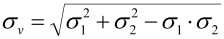

|
|
|


设置
您可以在模块专用设置（> ）中为计算、接合温度、安全系数等进行基本输入。
下面说明模块专用设置中的输入字段和选择字段：
- 选择当量应力，根据文献 [6]，采用 von Mises 应力：

根据文献 [78] 第 13 页，采用剪切应力假说：
σv = max(|σ σrr|,|σσrr|)
压入力可根据装配温度计算得出。
您可以在此定义 μe/μa 比值。该比值描述了压入摩擦系数与轴向摩擦系数之间的关系。默认值为 1.3。
注意：
DIN 7190-1 中只给出了压出的值。Niemann 第一卷（1981 年版）表 18/3 第 363 页也给出了压入的值。
您可以在此定义 μII/μa 比值。该比值描述了压出摩擦系数与轴向摩擦系数之间的相互关系。默认值为 1.6。
- （横向过盈配合）
安装间隙可以按接合处直径 df（若考虑加热则进行修正）输入，或按恒定安装间隙输入。外部部件的接合温度随后相应计算得出。您也可以输入接合期间的轴温。
该温度和安装间隙随后用于计算轮毂接合温度。仅当接合期间的轴温介于 -273 °C 和 20 °C 之间时，轮毂接合温度才会在报告中输出。
在设置中，您可以选择接合前轴是否过冷和/或轮毂是否加热。若勾选了该复选框，则使用 DIN 7190 规定的热膨胀系数相应值。默认情况下，该复选框设置为轴的过冷。
在设置中，您可以输入防止滑动、屈服点和断裂的所需安全系数。这些所需安全系数用于确定尺寸计算中所求的值。防止塑性变形的所需安全系数用于定义塑性直径，在过盈配合承受弹塑性应力时必须设置该直径。
若勾选此复选框，则轮毂材料的强度将使用壁厚而非毛坯直径来确定。
若勾选此复选框，则计算也会针对弹塑性应力进行（根据 DIN 7190-1），否则只包含弹性应力。
若运行期间出现负公差，则会显示错误消息。这通常会中断计算，因为该值意味着配合已不再是过盈配合。设置此标志可强制计算在出现错误消息的情况下继续进行，以便您可以显示更高运行温度下的公差。此时报告中只显示按运行状态计算出的公差部分。
Settings
You make the basic entries for the calculation, joining temperature, safeties etc. in the module-specific settings (> ).
The input and selection fields in the module-specific settings are explained below:
- Select equivalent stress according to [6], with von Mises stress:
According to [78], page 13, with the shear stress hypothesis:
σv = max(|σ σrr|,|σσrr|)
The press-on force can be calculated from the assembly temperatures.
You can define the μe/μa ratio here. This ratio describes the relationship between the coefficient of friction for press on and the axial coefficient of friction. The default value is 1.3.
Note:
Only values for forcing off are given in DIN 7190-1. Niemann Volume I (1981 edition), Table 18/3 p. 363, also gives values for press on.
You can define the μII/μa ratio here. This ratio describes the interrelationship between the coefficient of friction for press off and the axial coefficient of friction. The default value is 1.6.
- (lateral interference fit)
The mounting clearance can be entered either depending on the diameter of the joint df (modified if warming is taken into account) or as a constant mounting clearance. The joining temperature of the external component is then calculated accordingly. You can also input the temperature of shaft during joining.
This temperature and the mounting clearance are then used to calculate the hub joining temperature. The hub joining temperature is only output in the report if the shaft temperature during joining lies between -273 °C and 20 °C.
In the settings you can select whether the shaft is sub-cooled and/or the hub is heated before joining. If you have marked the checkbox, the respective value for the coefficient of thermal expansion according to DIN 7190 is used. By default, the checkbox is set to sub-cooling of the shaft.
In the Settings, you can input the required safeties against sliding, yield point and fracture. The required safeties are used to determine the searched values in the sizings. The required safeties against plastic deformation are used to define the plasticity diameter that must be set when an interference fit is placed under plastic-elastic stress.
If you set this checkbox, the strength of the hub material is determined using the wall thickness instead of the raw diameter.
If you set this checkbox, the calculation is also performed for elastic-plastic stress (according to DIN 7190-1), otherwise, only elastic stress is included.
If there is a negative allowance during operation, an error message is displayed. This usually interrupts the calculation, because this value would mean that the fit was no longer an interference fit. Set this flag to force the calculation to continue despite the error message so that you can display allowances for higher operating temperatures. Only the section with the allowances calculated for operation is then displayed in the report.